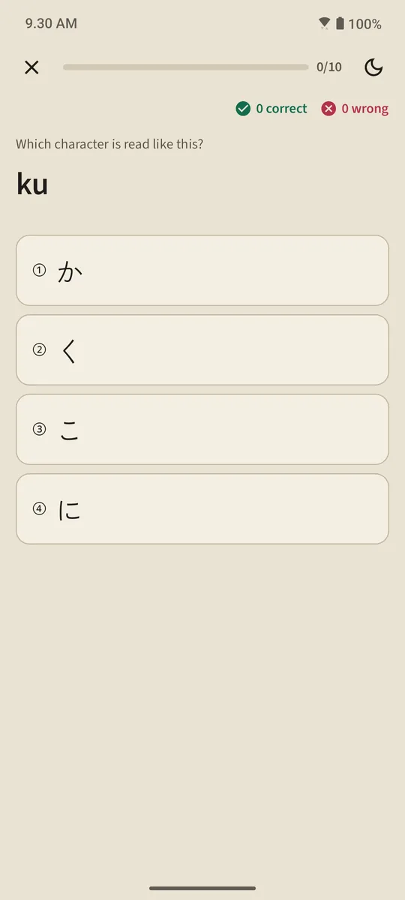

A table that doubles as a lesson list
The Hiragana and Katakana pages open from the "Japanese basics" section of the home screen. The summary card at the top counts the characters you know; the table below is in three groups: Basic (46 characters), Voiced (dakuten and handakuten), and Combinations (きゃ, しゅ, ちょ and so on). A filled cell means Known, an outlined cell means in progress.

A lesson per row
Each table row is one lesson: character boxes you tap to hear, romaji, a known mark, stroke order for every character, and "Words you can read": real dictionary words made only of the characters learned up to that row, with the romaji behind a button so you try reading first. A "Quiz this row" button closes the lesson.

Reading rules
The last group of each table explains the rules beginners trip over: small っ and long vowels in hiragana; the long mark ー, small ッ and loanword combinations (ファ, ティ, ウィ) in katakana. Each rule has example words you can read.
Ten-question quizzes, no rescheduling
The kana quiz uses three question types: character to romaji, romaji to character, and sound to character. A character becomes Known after three correct answers in a row, and drops back to Learning on a mistake. Unlike words and kanji, characters are not rescheduled: once you can read them all, the table is done. The quiz summary shows your score, newly known characters, and the ones you missed.

Where to start
When you first open the app, it asks whether you are starting from zero or can already read hiragana. Your answer sets one suggestion on the home screen: "Start with hiragana" for beginners, the first 20 words for everyone else. There is no checklist to finish: the same card links to a short tutorial of every feature, and it can be closed at any time.